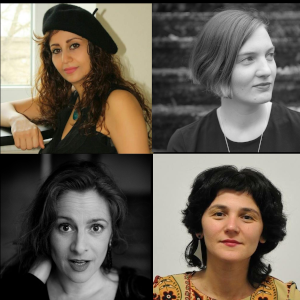

Live at Frau Mayer Rudolfsplatz 12 1010 Wien
Thursday September 19th 8pm
Nooshin Khoshnazar-Thoma - Vocals
Colors of Voices sind vier Frauenstimmen aus unterschiedlichen Gegenden der Erde, von denen jede ihre eigene unverwechselbare Geschichte erzählt. Den Anfang macht Nooshin Khoshnazar-Thoma, eine aus dem Iran stammende in Wien lebende Sängerin. Sie wird uns in die Welt der persischen klassischen Musik führen und einige persische Lieder in modernen Arrangements präsentieren.
Caroline Auque ist eine französisch-österreichische Chanson Sängerin, die uns mit ihrer unverwechselbaren Altstimme jazzige Versionen verschiedener Chansons vortragen wird. Christina Kapusta, die unter anderem ein Duo mit dem Wiener Bassisten Oliver Steger hat, ist bekannt für ihre Eigenkompositionen, von denen sie vier singen wird. Teona Mosia aus Georgien, die den Begriff des georgischen Jazz geprägt hat, wird uns Lieder aus ihrer Heimat auf georgisch und auch auf megrelisch, der Sprache der ursprünglichen Georgier, singen.
Begleitet werden die Sängerinnen umsichtig von Johannes Khoshnazar-Thoma am Klavier, Georg Schmelzer-Ziringer am Bass und Michael Seyfried am Schlagzeug.